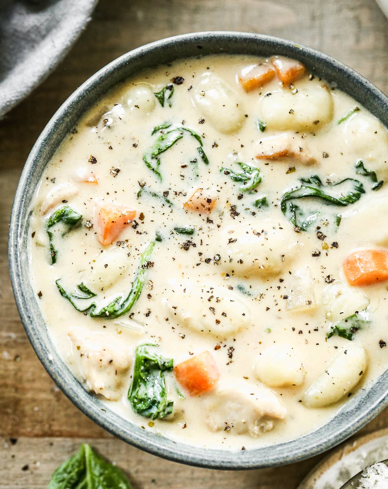

Chicken and Gnocchi Soup

Description
A delicious copycat version of Olive Garden's gnocchi soup.
Ingredients
- 1/2 cup margarine
- 3/4 cup finely chopped onion
- 1/2 cup finely grated carrot
- 1 1/2 teaspoons minced garlic
- 1/3 cup all-purpose flour
- 4 cups chicken broth
- 3/4 cup half-and-half
- 3/4 cup milk
- 1 (16 ounce) package potato gnocchi
- 1 1/2 cups chopped cooked chicken
- 3/4 cup shredded fresh spinach
- 1/2 teaspoon dried rosemary
- 1/2 teaspoon salt
- 1/4 teaspoon ground black pepper
- 1/4 teaspoon nutmeg
Steps
- Melt margarine in a large, heavy saucepan over medium heat.
- Cook and stir onion, celery, carrot, and garlic in hot margarine until softened, 5 to 10 minutes.
- Stir flour into vegetable mixture.
- Cook and stir until vegetables are evenly coated and flour is fragrant, 3 to 4 minutes.
- Pour chicken broth, half-and-half, and milk over vegetable mixture.
- Cook and stir until mixture thickens and comes to a boil, about 5 minutes.
- Reduce heat and stir in gnocchi, chicken, and spinach.
- Season with rosemary, salt, black pepper, and nutmeg.
- Cook soup over low heat until gnocchi is tender, 8 to 11 minutes.